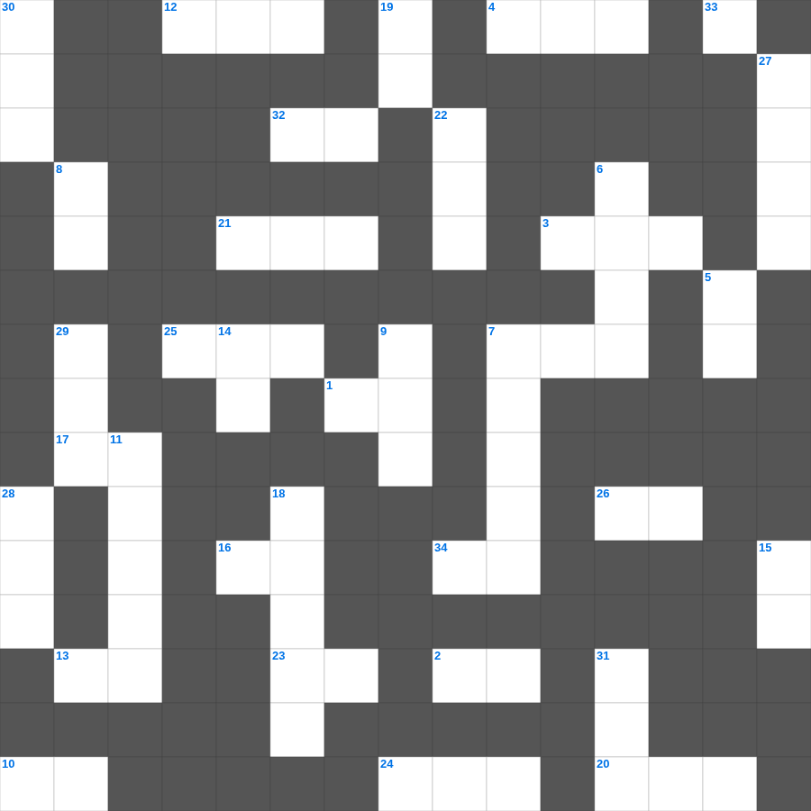

에스라 마스터 100 (1/2)
📌 서비스 정의
십자가로세로는 교회 주보와 주일학교에서 사용할 수 있는 성경 기반 가로세로 퍼즐 서비스입니다. 성경 인물, 사건, 핵심 구절을 바탕으로 제작되었습니다. 온라인 풀이 및 인쇄 기능을 제공합니다.
📖 에스라란?
에스라는 바벨론 포로에서 돌아온 이스라엘 백성이 성전을 재건하고, 학사 에스라가 율법을 가르치며 신앙 공동체를 회복하는 과정을 기록합니다.
📚 에스라의 주요 사건·주제
1차 포로 귀환 · 성전 재건의 시작과 중단 · 성전 재건 완성 · 에스라의 귀환과 율법 교육 · 이방 결혼 문제 개혁
무료로 즐기는 에스라 에스라 낱말 퍼즐! 35개의 힌트로 구성된 가로세로 낱말 퍼즐입니다. PC와 모바일 모두 지원되며, 정답을 바로 확인할 수 있어 혼자서도 쉽게 풀 수 있습니다.

📝 가로 힌트
1. 에스겔 34장에서 하나님이 친히 무엇이 되겠다고 하셨는가
2. 하나님이 이스라엘을 홍해 길로 돌려 인도하신 이유 '이것을 보면 뉘우칠까 하여'
3. 모세가 죽어 장사된 골짜기
4. 바사 왕 고레스 제삼년에 다니엘이 이것이라 이름한 벨드사살에게 한 일이 나타났으니
7. 그가 아버지의 마음을 자녀에게로 돌이키게 하고 자녀들의 마음을 그들의 이것에게로 돌이키게 하리라
10. 모르드개의 업적이 기록된 책 '바사와 이것의 왕들의 역대일기'
12. 모르드개가 대궐 문 앞에 앉아 있던 이유 '이것을 입었으므로'
13. 왕이 유다 왕 여호야긴의 머리를 들어 주었고 죄수의 이것을 벗겨 주었더라
16. 하나님의 나라는 말에 있지 아니하고 오직 이것에 있음이라
17. 반역을 일으켰던 '비그리의 아들' 이름
20. 여호와의 말씀이니라 보라 날이 이르리니 내가 이스라엘 집과 유다 집에 이것을 맺으리라
21. 교만은 패망의 선봉이요 거만한 마음은 이것의 앞잡이니라
23. 철이 철을 날카롭게 하는 것 같이 사람이 그의 이것의 얼굴을 빛나게 하느니라
24. 보라 여호와의 크고 두려운 날이 이르기 전에 내가 선지자 이것을 너희에게 보내리니
25. 부자와 거지 이것 비유
26. 대제사장의 뜰 아래 있던 베드로에게 예수를 아는 자라고 지목한 사람
32. 하나님이 옛적에 선지자들을 통하여 여러 부분과 여러 모양으로 말씀하셨으나 이 모든 날 마지막에는 누구를 통하여 말씀하셨나
34. 가나안 땅에 들어가면 그 땅의 이것을 다 타파하라
📝 세로 힌트
5. 보라 이전 것은 지나갔으니 보라 이것이 되었도다
6. 두 번째 인구 조사를 한 장소
7. 문화세가 성전에 세웠던 가증한 것
8. 망령되고 허탄한 말을 버리라 그들은 이것하지 아니함에 점점 나아가나니
9. 누구든지 나를 따라오려거든 자기를 부인하고 자기 이것을 지고 나를 따를 것이니라
11. 예레미야가 썼던 멍에의 상징적 의미
14. 네 마음을 다하고 목숨을 다하고 뜻을 다하여 주 너의 하나님을 이것하라
15. 보라 내가 이 성읍을 치료하며 고쳐 낫게 하고 평안과 이것의 풍성함을 그들에게 나타낼 것이며
18. 보아스는 엘리멜렉의 집안과 어떤 관계인가
19. 좁은 문으로 들어가기를 이것 하라
22. 정탐꾼들과 라합이 맺은 약속의 증표 '창문에 매단 이것'
27. 바울이 사탄에게 내준 인물들 중 하나: 후메내오와 이것
28. 천국은 마치 사람이 자기 밭에 갖다 심은 이것 알 하나 같으니
29. 남유다 역사상 가장 악한 왕 (히스기야의 아들)
30. 히스기야를 위협했던 앗수르의 왕
31. 바울과 함께 갇힌 에바브라의 소속 교회 (골로새서 참고)
33. 사람마다 이것으로써 소금 치듯 함을 받으리라
🧩 이 퍼즐에서 배우는 내용
이 퍼즐은 에스라 마스터 100 (1/2)의 핵심 단어와 개념을 자연스럽게 복습할 수 있도록 구성되었습니다. 주일학교 수업이나 개인 성경공부에서 학습 내용을 점검하는 용도로 바로 활용할 수 있습니다.
🧑🏫 교회 교육 자료 활용
이 퍼즐은 주일학교 교재 추천 자료로 활용할 수 있고, 주일학교 주보에 넣기 좋은 분량으로 구성되어 있습니다. 수업용 주일학교 교안에 활동지로 붙이거나, 예배 후 복습용 주일학교 공과교재로 바로 사용할 수 있습니다.
🏷️ 키워드
에스라 낱말 퍼즐, 에스라, 십자가로세로, 성경퀴즈, 말씀퀴즈, 가로세로퍼즐, 주일학교 교재 추천, 주일학교 주보, 주일학교 교안, 주일학교 공과교재